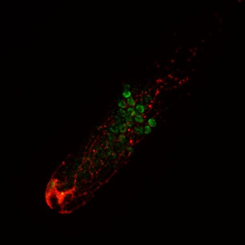

David Puerta Martos
PhD candidate.
Currently working at Instituto de Biologia Funcional y Genómica
Descripción:
Biólogo molecular. Actualmente contratado predoctoral trabajando en el organismo modelo Caenorhabditis elegans
Aprendiendo Python.
|
David Puerta MartosPhD candidate. Descripción: Biólogo molecular. Actualmente contratado predoctoral trabajando en el organismo modelo Caenorhabditis elegans Aprendiendo Python. |
| Fecha | Posición | Programa | Institución |
|---|---|---|---|
| 2018-2019 | Asistente de Investigación. | Garantía Juvenil. | Universidad de Jaén |
| 2019-Actualidad | Investigador Predoctoral. | Formación Personal Investigador (FPI). | Consejo Superior de Investigaciones Científicas (CSIC) |
|
 |
En esta imagen de microscopio confocal "Spinning disk" vemos una gónada diseccionada
de C. elegans. |